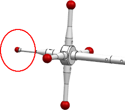
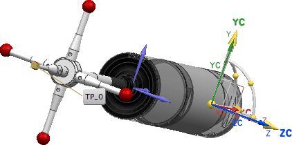
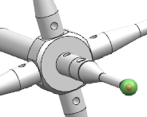
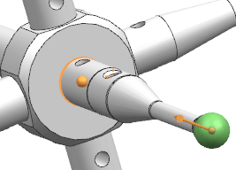

Define your first probe tracking point
In this activity, you will define the tracking point for the stylus that is coaxial with the probe barrel.
-
In the Probe dialog box, click the Tracking tab.
-
In the Tracking Point group, click Select Tracking Point
 .
.
-
From the Selection bar above the Inspection Navigator, from the selection filter list, select Face, and from the selection scope list, select Entire Assembly.
-
If necessary, rotate the probe so that the first stylus you created, the one that is coaxial with the probe barrel, is visible.

-
Click the face of the stylus tip.
You must select physical geometry, as inferred geometry options are not available.
Once you select the face, the indicator TP_0 and CSYS are displayed at the tip center.

-
In the Probe dialog box, in the Tracking Point group, in the Stem subgroup, click the Specify Vector list
 , and then select Two Points
, and then select Two Points  .
.
-
If it is not already selected, from the Selection bar above the Inspection Navigator, from the selection filter list, select No Selection Filter, and from the selection scope list, select Entire Assembly.
-
Click Vector Dialog
 .
.
-
In the graphics window, click the sphere face.

-
In the Vector dialog box, select Specify To Point and from the vector options list
, select Arc / Ellipse / Sphere Center  .
.
-
Closer to the point where the stylus connects with the probe hub, select another arc center.
The tracking point vector is pointing in the fixed Y direction, toward its connection.

-
Click OK.
-
Click Select Top Face
 , rotate the tool, and then click the location where the probe tool will mount with the probe head device.
, rotate the tool, and then click the location where the probe tool will mount with the probe head device.

Leave the Adjust Register and Offsets values at their default settings of 0.
-
In the Name box, type -Z and press Tab.
Although in this session the stylus points in the -X direction, when it is used in inspection setup files it will point in the -Z direction. Naming it appropriately will help you identify probe tips in your work sessions.
Your first probe tracking point is now defined. Leave the Probe dialog box open for the next activity.